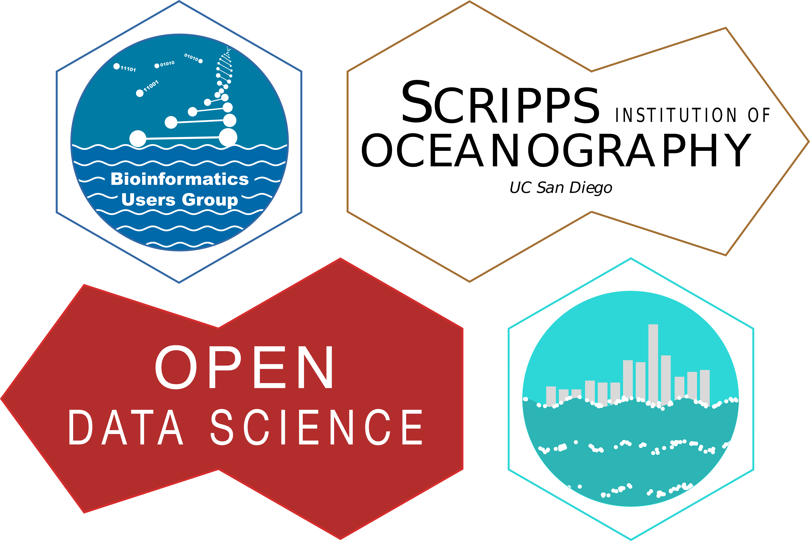

<hr />

<h2> Recent News and Events </h2>

{% for post in paginator.posts %}
{% assign author = site.authors[post.author] %}
<div class="article">
    <div class="well">
        <h1><a href="{{ site.baseurl}}{{ post.url }}">{{ post.date | date: "%Y %b %-d" }} - {{ post.title }}</a></h1>
        <h2>posted by: <a href="mailto:?to={{author.email}}">{{author.display_name}}</a></h2>
        {% if site.comments and post.comments %}
            {% if site.disqus != '' %}
            <p class="author"><a href="{{ site.baseurl }}{{ post.url }}/#disqus_thread" data-disqus-identifier="{{ post.url | slugify }}">Comments</a></p>
            {% elsif site.isso != '' %}
            <p class="author"><a href="{{ site.baseurl }}{{ post.url }}{{ site.isso_suffix }}#isso-thread">Comments</a></p>
            {% endif %}
        {% endif %}
        <div class="content">
            {{ post.content }}
        </div>
    </div>
</div>
{% endfor %}

<div class="pagination">
  {% if paginator.previous_page %}
      {% if paginator.previous_page == 1 %}
        <a class="btn btn-default" href="{{ site.baseurl}}/index.html" class="previous">Newer</a>
      {% else %}
        <a class="btn btn-default" href="{{ site.baseurl}}/page{{ paginator.previous_page }}" class="previous">Newer</a>
      {% endif %}
  {% endif %}
  <span class="page_number ">Page: {{ paginator.page }} of {{ paginator.total_pages }}</span>
  {% if paginator.next_page %}
    <a class="btn btn-default" href="{{ site.baseurl}}/page{{ paginator.next_page }}" class="next">Older</a>
  {% endif %}
</div>
